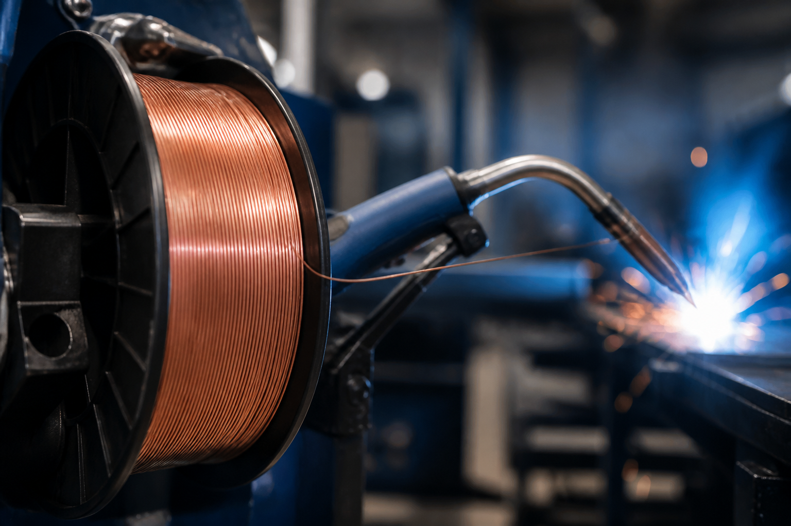
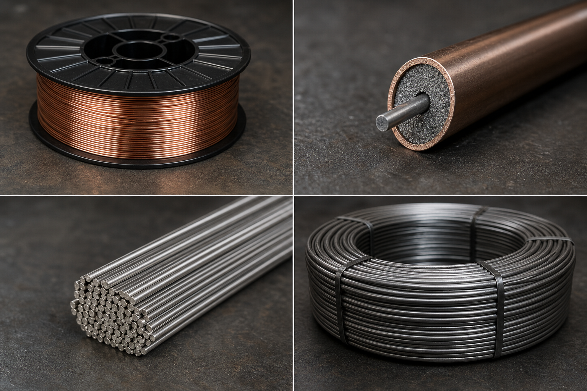
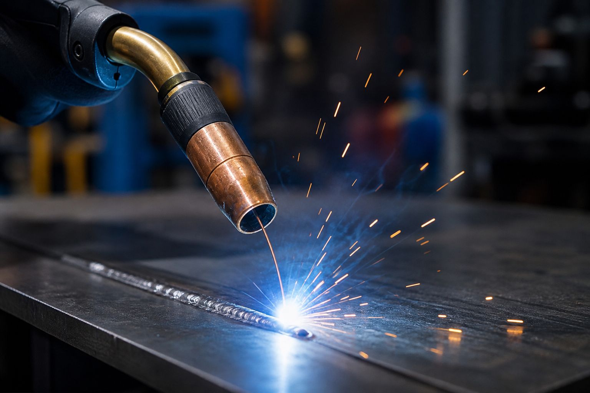
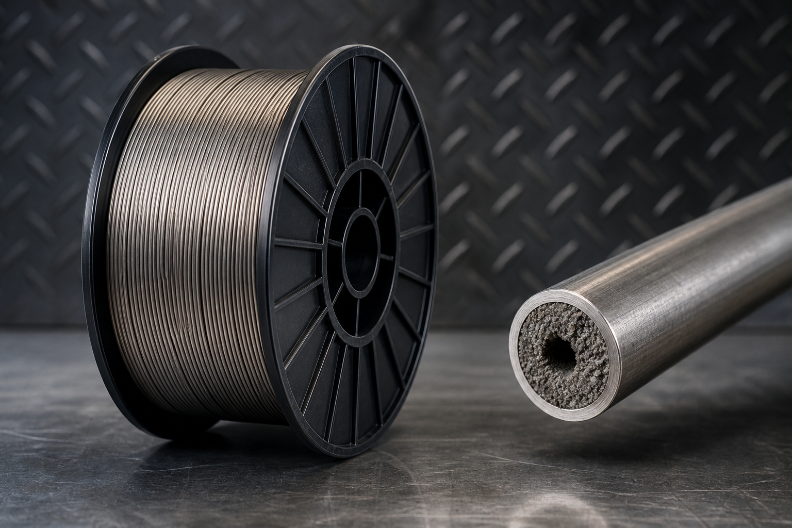
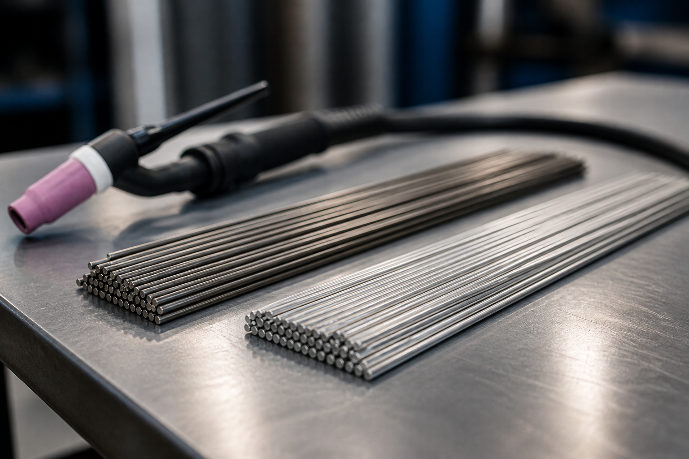

راهنمای کامل انواع سیم جوش؛ کدام را بخریم؟
اگر در کارگاه یا خط تولید با جوشکاری سروکار دارید، انتخاب سیم جوش درست بهاندازه تنظیم آمپر و گاز محافظ مهم است. در این مقاله، انواع رایج سیم جوش در بازار ایران را ساده و کاربردی مرور میکنیم تا برای پروژه بعدیتان انتخاب دقیقتری داشته باشید.
سیم جوش چیست؟
سیم جوش فلز پرکنندهای است که در فرایندهای جوشکاری قوسی (مثل MIG/MAG، TIG و زیرپودری) ذوب میشود و اتصال بین قطعات را میسازد. کیفیت سیم روی این موارد اثر مستقیم دارد:
- پایداری قوس و میزان پاشش
- نفوذ و استحکام جوش
- ظاهر گرده جوش
- احتمال تخلخل، ترک و سرباره گیرکرده

۱) سیم جوش توپر CO2 / MIG-MAG (Solid Wire)
رایجترین انتخاب کارگاههای ایران برای فولاد کربنی. معمولاً با کدهایی مثل ER70S-6 عرضه میشود و با گاز CO2 یا مخلوط Ar/CO2 کار میکند.
نقاط قوت
- سرعت بالا و هزینه مناسب
- ظاهر جوش تمیز در تنظیم درست
- موجودی زیاد در بازار
نقاط ضعف
- به گاز محافظ وابسته است
- در باد و فضای باز حساستر است
- کیفیت برندهای ضعیف باعث پاشش و گرفتگی نازل میشود
کاربرد: اسکلت فلزی، ساخت مخازن سبک، شاسی، ورقکاری، تولید سری.

۲) سیم جوش توپودری (Flux-Cored / FCAW)
سیم لولهای با پودر داخل؛ بخشی از محافظت جوش را خود پودر تأمین میکند. مدلهای با گاز و بدون گاز (self-shielded) دارد.
نقاط قوت
- نفوذ عمیق و رسوبگذاری بالا
- مناسب ضخامتهای بیشتر و کار صنعتی
- بعضی مدلها در فضای باز پایدارترند
نقاط ضعف
- دود و سرباره بیشتر
- قیمت معمولاً بالاتر از توپر
- تنظیم دستگاه حساستر است

۳) مفتول / فیلر TIG
میلههای صاف برای جوشکاری آرگون (TIG). برای کار ظریف، استیل، آلومینیوم و پاس ریشه بسیار رایج است.
نقاط قوت
- کنترل عالی و جوش تمیز
- مناسب ورق نازک و کار دقیق
نقاط ضعف
- سرعت کمتر نسبت به MIG
- نیاز به مهارت بالاتر جوشکار

۴) سیم جوش زیرپودری (SAW)
برای خطوط تولید سنگین، لوله و سازه ضخیم. همراه پودر مخصوص استفاده میشود.
نقاط قوت: رسوب بسیار بالا، جوش یکنواخت در کار پیوسته
نقاط ضعف: تجهیزات بزرگتر، مناسب کارگاه ثابت
۵) سیمهای تخصصی (استیل، آلومینیوم، نیکل)
- استیل: سریهایی مثل ER308L / ER316L
- آلومینیوم: ER4043 / ER5356 / ER5183
- نیکل و سوپرآلیاژ: برای صنایع نفت، گاز و تعمیرات خاص
اینها را فقط از برند و بستهبندی معتبر بخرید؛ ناخالصی و اشتباه آلیاژ هزینه سنگینی دارد.
جدول انتخاب سریع
| نیاز شما | پیشنهاد اولیه |
|---|---|
| فولاد معمولی کارگاهی | سیم توپر ER70S-6 + CO2 |
| ورق ضخیم / نرخ رسوب بالا | توپودری E71T |
| استیل ضدزنگ | ER308L یا ER316L |
| کار ظریف و پاس ریشه | فیلر TIG |
| خط تولید سنگین | زیرپودری SAW |
نکته خرید در بازار ایران
- قطر سیم را با ضخامت قطعه و توان دستگاه هماهنگ کنید (۰٫۸ / ۱٫۰ / ۱٫۲ میلیمتر رایجترینها هستند).
- تاریخ تولید و سلامت قرقره/بستهبندی را چک کنید.
- برای پروژه حساس، برند دارای سرتیفیکت و آنالیز ترکیب شیمیایی بخواهید.
- سیم ارزانِ بدون اصالت معمولاً با پاشش، سوختگی و دوبارهکاری گران تمام میشود.
در مقاله بعدی، برندهای قابل تأمین از پیشرو جوش (مثل Böhler، Lincoln، ESAB و…) را با سایر برندهای ایرانی و خارجی بازار ایران مقایسه کردهایم. برای استعلام: فرم قیمت.